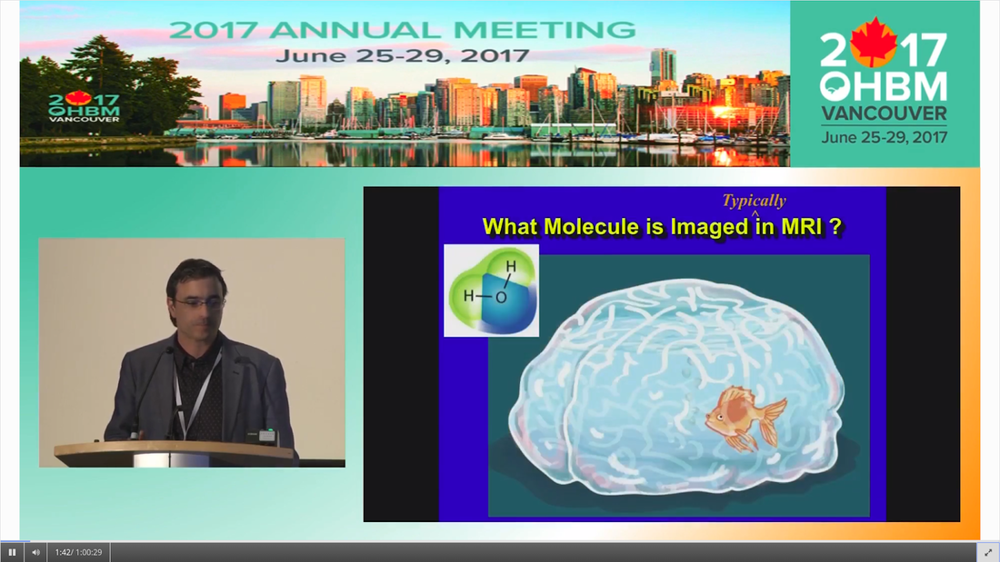
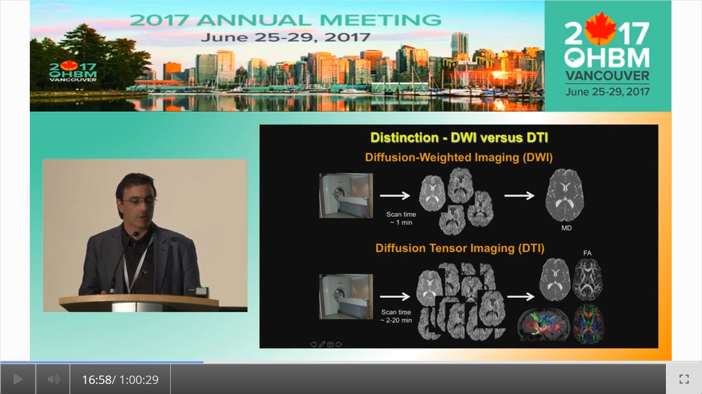
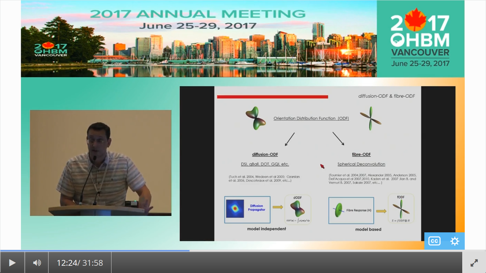
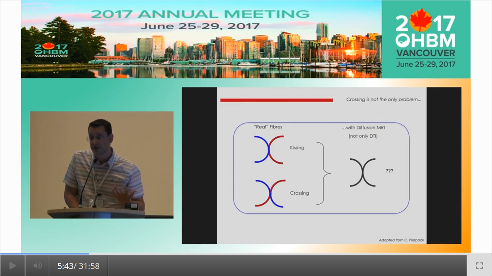

|
By Claude Bajada & Ilona Lipp Infographics: Roselyne Chauvine Expert editors: Tommy Boshkovski, Nikola Stikov Newbie editors: Alina Serbanescu, Adriana Oliveira, Andreia Meseiro Introduction For the budding cerebronaut, the term diffusion MRI evokes images of fancy red, green or blue fibre coursing across the brain; pretty enough to find their way onto a musical album cover or to be the standard stock image for anyone giving a public communication lecture about the brain. While the pictures are appealing, the terminology associated with diffusion MRI is often confusing and hard to disentangle. Any PhD student about to embark on a diffusion MRI project has had to grapple with a sea of acronyms such as DTI, HARDI, FA, RD, ADC, CHARMED and many more! If you have ever got frustrated by these terms and how they relate, this “how-to” post is for you. What is diffusion MRI? Keeping things simple, diffusion MRI refers to the collection of magnetic resonance imaging data that is sensitive to the direction of water diffusing in a tissue. Let us imagine that the brain were the fishbowl that Christian Beaulieu shows in his video (see below); devoid of any tissue. Any single water molecule in this “fishbowl brain” will, depending on the temperature of the water in the bowl, vibrate and move in a seemingly random fashion, colliding with neighboring molecules. This motion is called Brownian motion and it will only be restricted at the limits of the bowl.  Christian Beaulieu comparing the brain to a fishbowl - or not. However, as Christian shows so beautifully in his video (min. 2:20), the brain is not like a fishbowl (not even remotely like one - luckily!), but full of neurons and other cellular structures that act as potential barriers to water diffusion; hence water molecules can be used as a microscopic probe. If we can measure the average rate of displacement of water in all directions in every single brain voxel (a volume element - in the same way that a pixel is a picture element), then we have a measured profile of water diffusion in each voxel of the brain. To measure “displacement of water in all directions” we need to take many diffusion-weighted images. Diffusion MR data consists of these diffusion-weighted images and non-diffusion weighted images. A single diffusion weighted image can be thought of as an MRI volume that is sensitive to diffusion of water in one single direction. If you are wondering why we would want to do this … stick around! Ok, now we know the basics, but how do we do it in practice? In her video, Jennifer Campbell introduces the concepts of hindered and restricted diffusion in biological tissue and how they relate to the most basic diffusion MRI-based measure, the apparent diffusion coefficient (min. 2:50). She then explains how the generation of diffusion-weighted contrast in an MRI machine requires the application of a pair of equal and effectively opposite magnetic field gradients in a particular direction. These gradients disrupt the phase of proton spins in water molecules, and if there is random diffusion along the gradient direction, lead to signal loss, as compared to when no such gradient pair is present (from min. 4:25). In his video, Zoltan explains how this random movement differs from bulk flow (from min. 7:20) and how the diffusion-induced signal loss can be used to estimate diffusion constants (from min.11:00). How strong the signal loss is depends on the diffusion-weighting that is applied in your sequence, which often is parameterized with the so-called b-value. You will learn what the b-value means and what the famous signal equation looks like in Zoltan’s video (from min. 34:00). Importantly, as Els Fieremans explains in her video (from min. 3:00), diffusion-weighting can be manipulated either by changing the strength of the diffusion gradients or by altering the diffusion times, which is important for microstructural imaging (from min. 24:15, also see Christian Bealieu’s video from min. 23:45), a concept that we will discuss later. You would also always acquire some non-diffusion-weighted volumes (often called b0 images). A rule of thumb is that these are about 10% of your volumes. If you spread them out across your acquisition, this can later help you to correct for potential signal intensity drifts across your scan time (as explained in Alexander Leemans’ video from min. 14:25). Jennifer explains that if you acquire diffusion-weighting along many directions in a voxel, you get a diffusion-weighted signal profile, which depends on the underlying fibre orientations (around min. 13:50). The more directions we have, the higher the angular resolution (around the center of the sphere) we sample. In fact, scans with over 60(ish) directions are called High Angular Resolution Diffusion MRI (HARDI). Ideally, the directions you sample should be spaced out evenly around the sphere, and optimized using an electrostatic algorithm (this and other principles of diffusion acquisition are explained here). Luckily, most of the time you do not have to optimize these yourself, there are various standard gradient sets around that you can use in your HARDI acquisition. The diffusion MRI vocabulary is large, and this also holds true for diffusion sequences. In her video, Jennifer clarifies often used terms related to the most frequently used diffusion sequence, Stejskal-Tanner, such as little and big delta, effective diffusion time and all these funny letters b, k, n, and q (from min. 12:00). She also introduces other diffusion sequences designed to allow longer or shorter effective diffusion times, to reduce artifacts or to facilitate the quantification of compartment-specific or microscropic anisotropy (from min. 22:00). With all the options available, how do you choose how to acquire your data? Jennifer gives tips for how to design your protocols, depending on aim that you want to achieve with your experiment (from min. 16:00), which could be just estimating the apparent diffusion coefficient (ADC), reconstruction of the tensor, inferring multiple fibre orientations, or applying specific microstructural models such as Neurite Orientation and Dispersion Density Imaging (NODDI), Composite hindered and restricted model of diffusion (CHARMED) or AxCaliber. Zoltan gives some additional insight into optimising your acquisition, e.g. through triggering (from min. 40:30) and how to use a water bottle to test how linear your gradients are (from min. 19:45). Ok, now we have some data, what’s next? The first step that is always recommended with any kind of imaging data is to look at your images in different planes (axial, sagittal, coronal). During the first 14 minutes of his video, Alex shows us pretty much anything that could be wrong with diffusion data, before and after processing, including movement artifacts (from min. 2:00), distortions induced by eddy currents that occur due to fast gradient switching in diffusion sequences (from min. 19:15), distortions in the phase-encoding direction (from min. 19:50), vibration artifacts (from min. 4:50), physiologically plausible signals caused by Gibbs ringing (from min. 10:30), having done the calculations with wrong diffusion gradient directions (from min. 3:15), having applied unsuitable models (from min. 7:10), and artifacts that are not actually artifacts but truly abnormal ingenious brains (from min. 09:10). Luckily, most of the artifacts can be corrected with the vast amount of processing techniques that have been developed. Alex explains how to correct for signal intensity drifts (from min. 14:25) and why you famously have to rotate your b-matrix when doing subject motion correction (from min. 17:20). He illustrates the effects of eddy current correction (from min. 19:15), corrections for EPI deformations (from min. 19:50), and encourages the use of robust diffusion model estimations (from min. 22:15). If you have checked all these things and your data or results still look odd, don’t worry, there are at least 25 pitfalls with the analysis of diffusion MRI, and there is a variety of software packages that allow you to implement all sorts of algorithms and tricks. Everyone keeps saying “diffusion tensor imaging” - what on earth is a tensor anyway? This is a great question and one that diffusion MRI newbies (who do not come from a maths or physics background) will almost certainly ask. It is also one of those questions that seemingly has one of the most unsatisfactorily unintuitive answers ever to be found. Google’s dictionary defines a tensor as “a mathematical object analogous to but more general than a vector, represented by an array of components that are functions of the coordinates of a space.” But what does that have to do with the spheres and ellipsoids that we often see in diffusion tensor imaging? It may be more helpful to actually focus less on the idea of a tensor and more on the idea of a local diffusion model. We want to have a model that adequately describes the diffusion of water (or in some models, the fiber structure) in a given voxel and can explain the image intensities in our weighted images. One of the easiest ways of doing this is assuming that the diffusion of water can be described by a Gaussian distribution of displacement. At a particular time point that Gaussian can be described as a sphere (if diffusion is similar in all directions) or an ellipsoid (if diffusion is preferential in one direction). In any case, this idea that we have just described is called a local model - with diffusion tensor imaging, our local model is the ellipsoid. It is a model because it is a simplified way of describing the data that can be used (as we will see later) to extend our knowledge. It is local because the model is fit in every voxel. I still don’t know where the tensor comes into play! The tensor is a mathematical formulation of this simple local model. If you are super keen, keep on reading, otherwise, swiftly move to the next section. Since we are thinking in terms of spheres and ellipsoids, imagine that you can populate every voxel in an MRI volume with a unit sphere. This is a start, but it is not the best model of diffusion in every voxel. If we think of the corpus callosum we would have to apply tension to the ball to stretch it into an ellipsoid. You can think of the diffusion tensor as the transformation matrix, estimated from the data, that warps each sphere into an ellipsoid that describes the direction and magnitude of diffusion. So the tensor is not the ellipsoid itself, it is the instructions needed to warp a sphere into an ellipsoid. How to turn this mathematical intuition into a usable formulation is explained in Zoltan’s video. He explains how Fick’s law of diffusion relates to the diffusion constant we want to measure along one direction (from min. 12:50) and how to extend this concept to the 3D scenario (from min. 17:30). He nicely illustrates the tensor and explains the meaning of the off- and on-diagonal values (from min. 18:30). Is DTI just another way of saying diffusion MRI? No, in fact the terms diffusion MRI, diffusion-weighted MRI, and diffusion tensor imaging (DTI) all refer to subtly different things (also see Christian Beaulieu video from min. 16:45). Diffusion MRI is a very general phrase that can refer to any MRI sensitive to diffusion processes. Diffusion-weighted MRI refers to MRI sequences that are specifically designed to be sensitive to diffusion. Diffusion tensor imaging aims to specifically reconstruct the “tensor local model.”  Christian Beaulieu explaining the difference between DWI and DTI. Do we always use the tensor as a local model? No, the diffusion ellipsoid (or tensor) is one of the simplest models that we can use when doing diffusion MRI but it is definitely not the only one. In his video, Flavio Dell’Acqua explains that the limitation of using an ellipsoid “model” is that it can only adequately capture the diffusion profile that results if our voxel is only occupied with one fibre population (when people say fibre population, they mean fibres travelling the same way, usually because they belong to the same white matter “tract”). However, an estimated 70-90% of voxels have more than 1 fibre population (from min. 3:25). Therefore, more advanced approaches try to capture the orientation distribution of fibres in each voxel, either by looking at the diffusion orientation distribution function (ODF) or by applying spherical deconvolution to get down to the fibre orientation distribution (Flavio walks us through the various ways to do that, from min. 10:00). In fact, almost every diffusion software package will implement their own local model. For example, the popular software package FSL, besides also having the option to fit a tensor, can model each voxel in terms of a “ball and sticks”, where the “free water” in the voxel is modelled by an isotropic sphere and every “white matter fiber” is modelled by a “stick” - which is a super skinny ellipsoid. This is why such a model is sometimes referred to as a “multi-tensor” model. Other software packages such as MRtrix and StarTrack use Spherical Deconvolution (explained in this review paper). The type and complexity of the local model that you choose depends on your application. We will later describe two main applications of diffusion MRI, tractography and microstructural imaging.  Flavio Dell’Acqua explaining the difference between diffusion-ODF and fibre-ODF. What do I do after I have successfully estimated my local model? Now that we have a local model at every voxel we reach a fork in our pipeline. So far, all of the explanation was linear. But now there are multiple routes to go down and some of them potentially interact down the line, so writing about them becomes tricky! The two main prongs of the fork are “tracing” diffusion within white matter through tractography to reconstruct anatomical pathways, and extracting scalar maps from the local model which can potentially be given biological meaning related to brain microstructure. Let us first go down the tractography route: what can diffusion MRI teach us about white matter anatomy? Diffusion MRI is most frequently looked at in the context of WM. This is because WM consists of bundled fibre tracts that significantly impact on the diffusion anisotropy and directionality. The measured diffusion profiles can allow to reconstruct and delineate WM pathways in individual brains. This allows us to investigate an individual’s connective anatomy rather than us having to rely on expert or group based delineations of white matter pathways. For a nice review on the applications and challenges related to tractography see here. To do tractography, the process of “tracking” the WM pathways, we need voxel-wise estimations of fibre orientation. How to get these is explained in Flavio’s video (he also illustrates the limitations of tensor-based tracking in min. 24:30). Based on the peaks in the estimated diffusion or fibre orientation distributions, so-called streamlines are generated. In his video, Maxime Descoteaux explains how this can be achieved and all the various parameters that need to be set, such as how streamlines are seeded, how large each step size is etc. (from min. 3:00). An important point is the ability to resolve crossing fibres while not being tricked by kissing fibres (Flavio min. 4:50), and establishing constraints to ensure that the results are reliable (in min. 22:50 Flavio gives example for what happens when we don’t have enough constraints).  Flavio Dell’Acqua explaining the cheekiness of kissing and crossing fibres. The set of all streamlines is often called “tractogram”. Maxime introduces the methods of deterministic and probabilistic tractography (from min. 6:15) and how different software packages differ with regards to considering uncertainty (from min. 9:00). He also introduces the recent concepts of anatomically constrained tractography (from min. 13:00) and microstructure-informed tractography (from min. 25:00) to make results more anatomically accurate. Tractography results strongly depend on the methods used (and there are a lot of options, see this paper for a nice overview), something which has been recently demonstrated in a large-scale tractography challenge, where a large number of groups have applied their methods to the same dataset. In this and a previous challenge, it turned out that a main challenge with tractography is the large amount of false positive tracts produced by the currently available algorithms. Understanding WM anatomy helps with doing and validating your own tractography results. In his video, Marco Catani explains the different types of fibres in the brain (from min. 1:30) and provides some basic rules that help evaluate your tractography results, such as that projection fibres do not cross the midline and that association fibres do not enter core WM (from min. 8:30). He also emphasizes that the probability in probabilistic tractography, which is related to the certainty of the local fibre orientation estimates used to generate a streamline, is not an indication of anatomical certainty (from min. 12:20) and talks about the difficulties related to validating fibre tracts post-mortem (from min. 13:30). Since tractography allows us to study how cortical regions are connected through WM pathways, diffusion imaging has frequently been used to try to parcellate the cortex. In his video, Alfred Anwander points out that some of these parcellations, such as Brodmann parcellation or gyrification, are not useful to predict connectivity of cortical regions (from min. 4:00). He shows how probabilistic tractography seeded in individual voxels can be used to find parcels with similar “tractograms” (from min. 6:00). He also discusses the challenges of finding a parcel size that balances interindividual variability and specificity of parcel (from min. 3:00), and the problem that in some areas there is a smooth rather than sharp change in connectivity profile (from min. 11). In his video, Michel Thiebaut de Schotten explains how diffusion-based parcellation is based on a combination of connectivity matrices with clustering methods and the methodological challenges related to tractography-based parcellation, one being that the further the distance between two points, the fewer streamlines can be found (from min. 12:00). We will now back track and discuss what diffusion MRI can teach us about microstructure In her video, Els explains how diffusion MRI can be used as an in vivo microscope for probing the brain’s microstructure. This means, even though we are looking at large voxels, there is information in the diffusion data that tells us about the tissue composition of the voxels. More complex local models (than e.g. the tensor) can be used to obtain more biologically meaningful information. Els emphasizes the difference between mathematical representations of the diffusion signal and biophysical models (from min. 10:00). The most widely used mathematical representation of the diffusion signal (loss) is the tensor, as already discussed above. There are various parameters we can extract from it that tell us something about the microstructure, such as mean diffusivity (MD), axial diffusivity (AD), radial diffusivity (RD) and fractional anisotropy (FA; Els’ video from min. 4:40). FA is probably the most widely used microstructural parameter in application studies, and quantifies the extent of diffusion anisotropy in a voxel. What this means in terms of biology, is discussed by Christian in his video. He concludes that anisotropy is mostly driven by the axonal membranes, with myelin having a comparatively smaller impact. FA is known to be sensitive to various tissue properties, so interpreting individual differences or changes over time can be challenging. As diffusion is influenced by various things, to gain more specificity of our measures we can apply biophysical models (review paper on diffusion-based microstructural models). Commonly used examples are NODDI, neurite orientation dispersion and density imaging, CHARMED, the composite hindered and restricted model of diffusion, and many … many …….. many more. In these models, the geometry of the brain tissue is simplified, for example by assuming a limited number of compartments which differ in their diffusion behaviour. The most common distinction is the intra-axonal compartment - modelled as impermeable cylinders or sticks and extra-axonal space. In her video, Els (from min. 11:50) explains the different parameters that can be derived from such models, such as the proportion of the tissue belonging to intra-axonal vs extra-axonal space. To estimate such parameters, biophysical models mathematically formulate what aspects of microstructure affect the diffusion signal in what way, and then find out what is the most likely microstructure to give rise to the observed signal. Be aware that the more complicated the model and the more parameters are estimated, the more data you need and the less robust your fit will be. Els explains that this is challenging, and illustrates how such nonlinear models are ill-posed (from min. 14:45). For this reason, constraints need to be established, e.g. in the famous NODDI model, department diffusivities are assumed (from min. 16:50). Using biophysical models, it is always a good idea to understand where the constraints and assumptions are, so you can decide for your specific application, whether these are reasonable or may be problematic (see this paper for an example). Now that I have my microstructural parameter maps, what do I do? Ultimately, we want to apply all these methods to learn something about the brain. Often, we want to compare different groups of people, find brain-behaviour correlations or understand brain plasticity. In his video, Anton Beer walks you through the various methods to do group analysis on microstructural maps, including region of interest (ROI)-based (from min. 6:25) and whole-brain approaches (from min. 11:00). One frequently used statistical method for diffusion data is tract-based spatial statistics (TBSS), which is not actually based on tractography (as the name may imply). How TBSS uses FA maps to obtain a skeleton is explained by Anton (from min. 15:35). As he and Alex (from min. 30:45) point out, one limitation that needs to be kept in mind is that due to the alignment errors and the fact that the analysis is limited to local maxima of FA, there is no guarantee that anatomical structures do overlap across individuals (for other methodological considerations related to TBSS check out this paper). Anton explains how your results from tractography can be useful to get ROIs (from min. 8:20) and for surface-based analysis (from min. 19:15). An application of how a set of complementary tract-specific microstructural measures can be used for studying brain development is illustrated in Jason Yeatman’s video. Recent developments even allow fibre-population specific metrics (see Flavio’s video from min. 27:30). What do I do if I am completely confused or super motivated to do my own diffusion MRI study? Diffusion MRI is a large, complicated topic and there are a lot of things to get your head around. Luckily, there are also various resources other than this blog post that can help you with that. If feel like watching more educational videos, check out our friends at ISMRM with their diffusion without equations post and their interactive course on diffusion, this also includes quizzes to test yourself. If you are interested in the history of diffusion MRI from its earliest days to the latest developments, check out the presentations from the A Spin Thro’ the History of Restricted Diffusion MR workshop. If you prefer reading, a number of textbooks cover a wide range of aspects, such as Diffusion MRI: From Quantitative Measurement to In-vivo Neuroanatomy, Diffusion MRI: Theory, Methods and Applications, Introduction to Diffusion Tensor Imaging and Higher Order Models. Last but not least, if you have any questions that came up while reading this post, questions about things you have never really understood or questions that you have always wanted to ask the “experts” in the field, please send them to us (via email, or tweet). We are aiming to write a follow-up post to give you the answers.
0 Comments
Your comment will be posted after it is approved.
Leave a Reply. |
BLOG HOME
Archives
August 2023
|
 RSS Feed
RSS Feed
{kind=link}